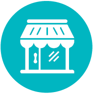

Who we are - India's most convenient online pharmacy
e-MEDS, is brought to you by the Bharat Drug Group – one of India’s most trusted pharmacies, with over 100 years’ experience in dispensing quality medicines. At e-MEDS.com, we help you look after your own health effortlessly as well as take care of loved ones wherever they may reside in India. You can buy and send medicines from any corner of the country - with just a few clicks of the mouse.
What we do – Offer fast online access to medicines with convenient home delivery
At e-MEDS.com, we make a wide range of prescription medicines and other health products conveniently available all across India. Even second and third tier cities and rural villages can now have access to the latest medicines. Since we also offer generic alternatives to most medicines, online buyers can expect significant savings.
 |
||
CONVENIENCE |
ONE-STOP SHOP |
TRUST |
Heavy traffic, lack of parking, monsoons, shop closed, forgetfulness… these are some of the reasons that could lead to skipping of vital medications. Since taking medicines regularly is a critical component of managing chronic medical conditions, it’s best not to run out of essential medicines. Just log on to netmeds.com, place your order online and have your medicines delivered to you – without leaving the comfort of your home. What’s more, with easy access to reliable drug information, you get to know all about your medicine at netmeds.com, and once you’re a Netmeds customer, you’ll get regular refill reminders, so you’ll never again come up short of medicines. |
|
e-MEDS.com continues a legacy of 100 years of success in the pharmaceutical industry. We are committed to provide safe, reliable and affordable medicines as well as a customer service philosophy that is worthy of our valued customers’ loyalty. We offer a superior online shopping experience, which includes ease of navigation and absolute transactional security. |